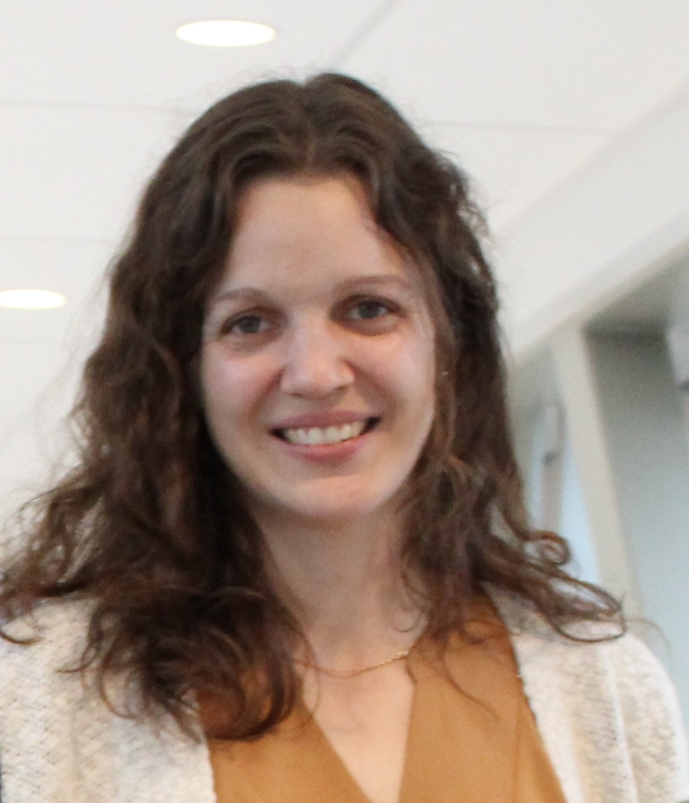

About me¶
Susan Westfall, Ph.D.¶

How to connect¶
Profile Summary¶
I am a mucosal immunologist fascinated by host-environmental interactions. Intestinal architecture provides a unique landscape to understand how multiple tissue compartments, both host and bacterial, must coordinate their response to damage and invasion to establish homeostasis and promote health. Dysbiosis, damage and disease disrupt this delicate balance resulting in inflammatory bowel diseases (IBD), cancer and small intestinal dysmotility. My current research shows that our body’s environmental tolerance resides in multi-compartmental communication between the immune system, stromal backbone and the gut microbiota. I study tissue microenvironments with both functional and unbiased approaches in order to unravel targetable pathways that can inform therapeutic development.
I look forward to establishing an independent research platform that will detangle multi-compartmental communication in intestinal tissue microenvironments to facilitate development of targetted therapies against gastrointestinal disorders.
Research Interests¶
- Mucosal Immunology
- Gut Microbiota
- Host-Parasite Interactions
- Gut-Brain-Axis
Research Experience¶
Postdoctoral Research Fellow | 2020 - present¶
Research Institute of McGill University Health Complex (RI-MUHC), Montreal, QC, Canada¶
Department of Microbiology and Immunology | Dr. Irah King’s Lab¶
- Created and led a research project defining a novel role of type 1 immunity during intestinal damage
- Discovered that IFN𝛾 bridges an immune-stromal cell axis to prevent tissue damage and reduce mortality in mice subjected to infection in a gut-microbiota dependent manner.
- Technical expertise in flow cytometry, bone marrow chimeras, adoptive transfer, genetic mouse models, primary cell cultures, intestinal organoids and stem cells, confocal imaging and in situ hybridization
- Led several collaborative multiparametric imaging and clinical immunophenotyping studies
- Duties included leadership roles, official mentorship, and teaching experience
Postdoctoral Research Fellow | 2018 - 2020¶
Icahn School of Medicine at Mount Sinai, New York, NY, USA¶
Department of Neurology | Dr. Giulio Pasinetti's Lab¶
- Defined gut-brain-axis mechanisms exacerbating post-traumatic stress disorder symptoms in mice
- Developed a probiotic formulation with optimized metabolite output driving an immunoregulatory state
- Built a microbiology lab and humanized model of the gastrointestinal tract from the bottom-up
- Collaborated on machine learning research for predicting relationships between gut microbiota populations, immune cell subsets and behavioral phenotypes to direct mechanistic-based hypotheses
- Duties included mentorship, IACUC and IRB protocol writing, collaborative projects in metabolomics and neuroimmunology, clinical sample work and program grant writing
Co-founder & Vice President of Proviva Pharma Inc., Montreal, Canada | 2015 - 2018¶
- Spin-off company based on my Ph.D. work created with my supervisor focused on developing probiotic and prebiotic formulations with health claims for metabolic disorders and aging
- Filed an international patent and obtained operating permits in several countries
- Collaborated with manufacturers to customize probiotic products for Asian markets
Research Assistant in the Department of Biochemistry | 2013 - 2014¶
Banaras Hindu University, Dr. Surya Pratap Singh’s lab; Varanasi India¶
- Explored principles of alternative medicine to design novel treatment paradigms for Parkinson's disease
- Discovered therapeutic benefits of plant-based herbs acting through gut-brain-axis mechanisms
Research Assistant at Genome Quebec Innovation Centre | 2012 - 2013¶
McGill University; Montreal, Canada¶
- Developed a pipeline to identify epigenetic modifications in clinical samples using high-throughput, next-Generation sequencing technologies for MethylC-Seq, ChIP-Seq and RNA-Seq
- Created a foundation upon which several high-impact studies were published
Education¶
Ph.D. | 2015 - 2018¶
McGill University, Montreal, QC, Canada¶
- Department of Biomedical Engineering | Dr. Satya Prakash's Lab
- Development of a novel probiotic and synbiotic formulation for the management of neurodegenerative and other diseases
M.Sc. | 2009 - 2012¶
McGill University, Montreal, QC, Canada¶
- Department of Neuroscience | Dr. Nicolas Cermakian's Lab
- The time-mediated effects of turpentine on fever, cytokine induction and peripheral clock gene expression
B.Sc. (Honours) | 2005 - 2009¶
McGill University, Montreal, QC, Canada¶
- Department of Biochemistry | Dr. Thomas Duchaine's Lab
- Characterization of the helicase domain within RNAi machinery
Work & Research Experiences¶
McGill University, Montreal, QC, Canada¶
Teaching Assistant | 2016¶
- Department of Biomedical Engineering
- Course: BMED505: Artificial Cells
Banaras Hindu University, Varanasi, UP, India¶
Research Assistant | 2013 – 2014¶
- Department of Biochemistry
- Exploring immunological and behavioral benefits of nutraceuticals for Parkinson’s disease.
McGill University, Montreal, QC, Canada¶
Research Assistant | 2012 - 2013¶
- McGill University & Genome Quebec Innovation Centre
- Determination of epigenetic modifications in clinical sampes using high-throughput, Next-Generation sequencing technologies for MethylC-Seq, ChIP-Seq and RNA-Seq
Teaching Assistant and Grader | 2011 - 2012¶
- Department of Biochemistry
- Bioc300D2: Laboratory in Biochemistry
Undergraduate Researcher | 2007¶
- Department of Biomedical Engineering
- iGEM: International Genetically Engineered Machines Competition | MIT
- Group research leader for iGEM. We strove to engineer a robust quorum sensor in bacteria and to mathematically model this stochastic system for execution in Mathematica.
Fellowships¶
- CIHR Postdoctoral Fellowship | $70,000 annually | Section Rank: top 2.7% | 2021-2025
- American Association of Immunology (AAI) Salary Fellowship | $75,000 (Awarded) | 2021
- McLaughlin Postdoctoral Fellowship, Dept. Medicine, McGill | $25,000 | 2021
- Excellence Award, Dept. Biomedical Engineering, McGill University | $5000 annually | 2017-2018
- Max Binz Award, Dept. of Medicine, McGill University | $12,000 annually | 2017-2018
- NSERC CGS Ph.D. Fellowship | $35,000 annually | 2014-2017
- FRSQ Master’s Fellowship | $17,500 annually | 2009-2012
- Summer NSERC Undergraduate Research Studentship Award | $5625 | 2008
- J.W. McConnell Scholarship, McGill (internal) | $3000 annually | 2005-2009
Honours & Awards¶
- Invited speaker, International Union of Immunological Sciences (IUIS) meeting, Vienna, Austria | 2025
- Oral presentation award, Montreal Immunology Meeting (MIM), Montreal, CA. | $500 | 2024
- 2nd Oral Prize at Woods Hole Immunoparasitology Meeting, WHIP. Mass. USA. | $200 | 2024
- Travel Award Society for Mucosal Immunology (SMI), ICMI. Copenhagen, DK. | $1000 | 2024
- 1st Prize for Oral Presentation at Canadian Parasitology Network (CPN) & AMPS Symposium, Montreal, QC | $250 | 2023
- 1st Prize for Oral Presentation at Canadian Society of Immunology (CSI), Orford, QC | $250 | 2023
- Travel Award for Canadian Society of Immunology (CSI), Orford, QC | $500 | 2023
- Invitation & Full Scholarship to Cytokines (ICIS) Conference, Athens, Greece | 2023
- Invitation & Full Scholarship to American Society of Tropical Medicine and Hygiene (ASTHMH), Chicago, USA | 2023
- 1st Prize & Excellence Award for Oral Presentation Woods Hole Immunoparasitology (WHIP) Conference | 2023
- Travel Award Society for Mucosal Immunology (SMI), ICMI. Seattle, USA | $1000USD | 2022
- 1st Poster Prize, Woods Hole Immunoparasitology Meeting, WHIP. Mass. USA | $500USD | 2021
- Journal Top 100 Reads (Rank 26) in Scientific Reports (Longevity Extension in Drosophila) | 2019
- 1st Poster Prize at Probiota international conference. Amsterdam, NL. | 2016
- 1st Oral Prize at Natural Health and Product Research International Conference | $250 | 2015
- Shastri Indo-Canadian Institute Travel Grant, international competition | $1000 | 2014
- 1st Poster Prize, International Congress on Holistic Medicine Conference, Kerala, India | 2013
- Graduate Program of Neuroscience Entrance Scholarship | $10,000 | 2009
- Further 1st Place Awards International & Domestic: 13 awarded | 2007-2011
Other Activities¶
Teaching Experience¶
- Honors Immunology, MIMM501/502, Guest Lecturer | 2023-2025
- Intermediate Immunology, MIMM314, Guest Lecturer | 2023-2025
- Mentor, INDS123, Research Fundamentals for Medical Students | 2022-2023
- Invited Talk for Seminar Series in Dept. Immunology, McGill University | 2015
Editorial Experience¶
- Member of CIHR Review Committee for Doctoral Students | 2023-2025
- Co-editor Frontiers in Immunology Special Research Topic | 2022-present
- Co-editor to Frontiers in Immunology Editorial Board | 2022-present
Student Supervision¶
- Honors Students (1): Giordano Mandato
- Undergraduates (6): L. Saraffin, S. Cleff, F. Grafton, S. Sorrini, C. Shum-Tim & M. Syssoeva
- MSc & PhD candidates (3): Umar Iqbal, Leila Faradel, Gabriel Barragan
- Research Associates (1): Francesca Caracci
Invited Judge¶
- Society of Mucosal Immunology (ICMI Biannual Meeting) Poster Judge | 2024
- Conference Poster Judge at Canadian Parasitology Network (CPN)/AMPS | 2023-2024
- Student Research Day (RI MUHC) Poster Judge | 2023
- Conference Poster Judge at Canadian Society of Immunology (CSI) | 2023
- Student Poster judge at McGill Immunology Graduate Research Day | 2023
- Conference Poster judge at International Conference of Mucosal Immunology (ICMI) | 2022
- Conference Poster judge at Annual Montreal Parasitology Symposium (AMPS) | 2022
- RI-MIHC Graduate Research Day judge of poster/oral presentations | 2022
Industrial Experience¶
- Vice President Proviva Pharma Inc.: Montreal QC, Canada. (part-time) | 2015-2019
- Spin-off created with my PhD supervisor to sell probiotic and prebiotic formulations internationally